NumPy 数据生成 · Matplotlib 绘图 · 11 种常用图表类型 · 完整代码示例
Matplotlib 3.11 · NumPy 2.5折线图是最基础的图表类型，适合展示数据随时间或连续变量的变化趋势。np.linspace 生成等间距采样点，np.sin/np.cos 计算三角函数值，plt.plot 绘制折线。
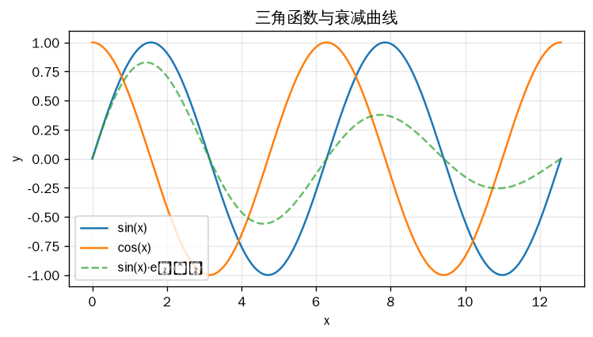
import numpy as np
import matplotlib.pyplot as plt
x = np.linspace(0, 4*np.pi, 400)
plt.figure(figsize=(7, 3.5))
plt.plot(x, np.sin(x), label='sin(x)')
plt.plot(x, np.cos(x), label='cos(x)')
plt.plot(x, np.sin(x)*np.exp(-x/8), '--',
label='sin(x)·e⁻ˣ⁸', alpha=0.7)
plt.title('三角函数与衰减曲线')
plt.xlabel('x')
plt.ylabel('y')
plt.legend()
plt.grid(alpha=0.3)
plt.show()柱状图适用于分类数据比较。np.random.randint 生成随机整数，plt.bar 绘制柱状图并支持误差条（yerr 参数）。颜色使用 Matplotlib 内置的 viridis colormap 渐变色。
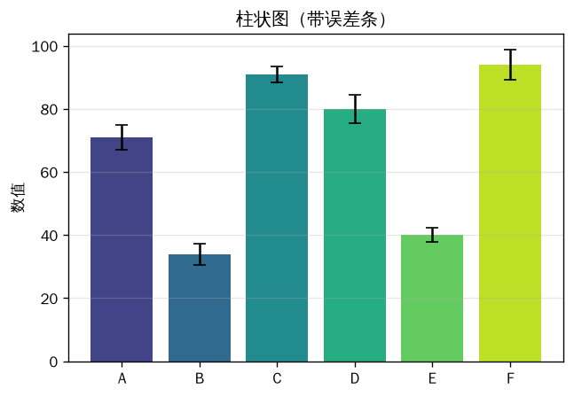
import numpy as np
import matplotlib.pyplot as plt
np.random.seed(42)
cats = ['A', 'B', 'C', 'D', 'E', 'F']
vals = np.random.randint(20, 100, 6)
errs = np.random.uniform(2, 6, 6)
plt.figure(figsize=(6, 4))
plt.bar(cats, vals, yerr=errs, capsize=4,
color=plt.cm.viridis(np.linspace(0.2, 0.9, 6)))
plt.title('柱状图（带误差条）')
plt.ylabel('数值')
plt.grid(axis='y', alpha=0.3)
plt.show()散点图展示两个变量间的相关性。np.random.randn 生成正态分布数据，plt.scatter 的 s 控制点大小、c 控制颜色。用 np.polyfit 拟合回归线，直观展示数据的线性趋势。
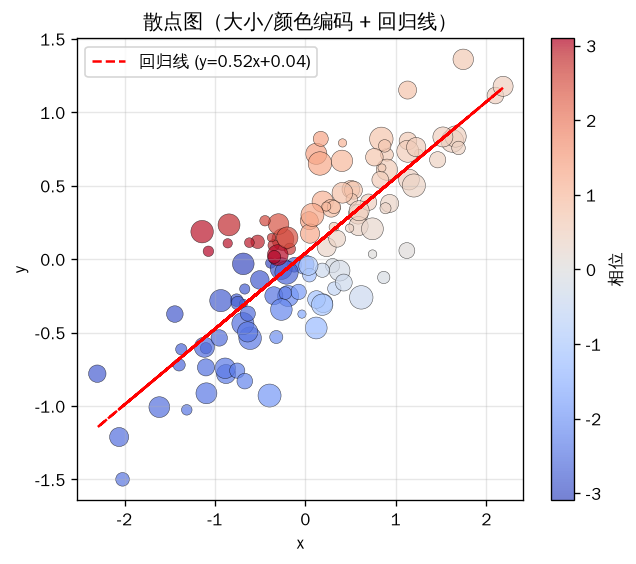
import numpy as np
import matplotlib.pyplot as plt
np.random.seed(1)
n = 120
x = np.random.randn(n)
y = 0.5*x + 0.3*np.random.randn(n)
sizes = np.random.uniform(20, 200, n)
colors = np.arctan2(y, x)
plt.figure(figsize=(6, 5))
sc = plt.scatter(x, y, s=sizes, c=colors,
cmap='coolwarm', alpha=0.7,
edgecolors='k', linewidth=0.3)
plt.colorbar(sc, label='相位')
# 回归线
m, b = np.polyfit(x, y, 1)
plt.plot(x, m*x+b, 'r--', lw=1.5,
label=f'y={m:.2f}x+{b:.2f}')
plt.title('散点图（大小/颜色编码 + 回归线）')
plt.xlabel('x'); plt.ylabel('y')
plt.legend(); plt.grid(alpha=0.3)
plt.show()直方图展示数据分布形态。np.random.normal 生成正态分布，np.random.exponential 生成指数分布。同一张图中叠加三种分布，设置 density=True 归一化为概率密度，alpha=0.5 实现半透明叠加。
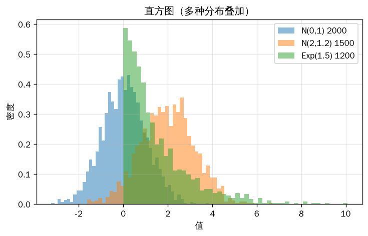
import numpy as np
import matplotlib.pyplot as plt
np.random.seed(42)
d1 = np.random.normal(0, 1, 2000)
d2 = np.random.normal(2, 1.2, 1500)
d3 = np.random.exponential(1.5, 1200)
plt.figure(figsize=(7, 4))
plt.hist(d1, bins=50, alpha=0.5,
label='N(0,1) 2000', density=True)
plt.hist(d2, bins=50, alpha=0.5,
label='N(2,1.2) 1500', density=True)
plt.hist(d3, bins=50, alpha=0.5,
label='Exp(1.5) 1200', density=True)
plt.title('直方图（多种分布叠加）')
plt.xlabel('值')
plt.ylabel('密度')
plt.legend()
plt.grid(alpha=0.3)
plt.show()饼图展示各部分占整体的比例。plt.pie 的 explode 参数分离突出某一块，autopct 控制百分比格式，startangle 调整起始角度。适合展示分类占比数据。
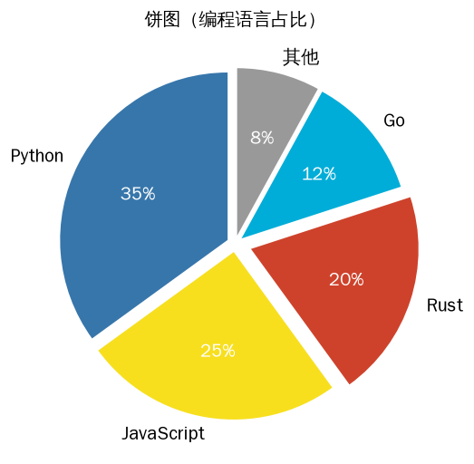
import numpy as np
import matplotlib.pyplot as plt
sizes = [35, 25, 20, 12, 8]
labels = ['Python', 'JavaScript', 'Rust', 'Go', '其他']
explode = (0.05, 0.05, 0.1, 0.05, 0.05)
colors = ['#3776AB', '#F7DF1E', '#CE422B',
'#00ADD8', '#999']
plt.figure(figsize=(5, 5))
wedges, texts, autotexts = plt.pie(
sizes, labels=labels, autopct='%1.0f%%',
explode=explode, colors=colors,
startangle=90)
for t in autotexts:
t.set_color('white')
t.set_fontweight('bold')
plt.title('饼图（编程语言占比）')
plt.show()箱线图展示数据的分布特征：中位数、四分位数、异常值。用不同方差的 np.random.normal 生成多组数据对比。plt.boxplot 的 patch_artist=True 填充颜色，showmeans=True 显示均值。
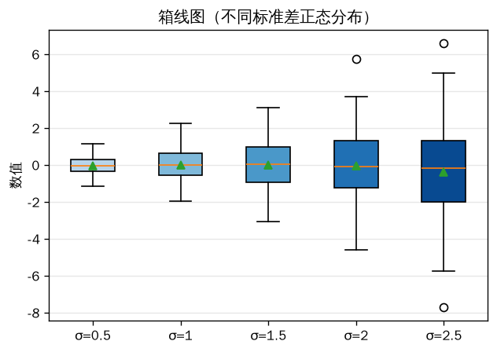
import numpy as np
import matplotlib.pyplot as plt
np.random.seed(7)
data = [np.random.normal(0, s, 80)
for s in [0.5, 1, 1.5, 2, 2.5]]
plt.figure(figsize=(6, 4))
bp = plt.boxplot(data,
tick_labels=['σ=0.5','σ=1','σ=1.5','σ=2','σ=2.5'],
patch_artist=True, showmeans=True)
for patch, c in zip(bp['boxes'],
plt.cm.Blues(np.linspace(0.3, 0.9, 5))):
patch.set_facecolor(c)
plt.title('箱线图（不同标准差正态分布）')
plt.ylabel('数值')
plt.grid(axis='y', alpha=0.3)
plt.show()热力图适合展示二维矩阵数据，如特征相关性。np.random.randn 生成随机矩阵，plt.imshow 渲染彩色网格，配合 plt.colorbar 显示颜色标尺。在网格中央标注数值，用颜色深浅区分正负相关性。
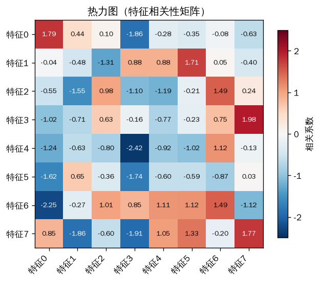
import numpy as np
import matplotlib.pyplot as plt
np.random.seed(3)
n = 8
data = np.random.randn(n, n)
labels = [f'特征{i}' for i in range(n)]
plt.figure(figsize=(6, 5.5))
im = plt.imshow(data, cmap='RdBu_r',
aspect='equal', vmin=-2.5, vmax=2.5)
plt.colorbar(im, label='相关系数', shrink=0.8)
plt.xticks(range(n), labels, rotation=45, ha='right')
plt.yticks(range(n), labels)
# 标注数值
for i in range(n):
for j in range(n):
c = 'white' if abs(data[i,j]) > 1.5 else 'black'
plt.text(j, i, f'{data[i,j]:.2f}',
ha='center', va='center', fontsize=8, color=c)
plt.title('热力图（特征相关性矩阵）')
plt.show()等高线图适合展示三维数据的二维投影。np.meshgrid 生成网格坐标，计算二元函数 Z = sin(X)·cos(Y) 的值。plt.contourf 绘制填充等高线，plt.contour 绘制线框，plt.clabel 标注等高线数值。
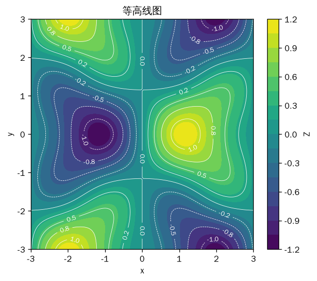
import numpy as np
import matplotlib.pyplot as plt
x = np.linspace(-3, 3, 100)
y = np.linspace(-3, 3, 100)
X, Y = np.meshgrid(x, y)
Z = np.sin(X)*np.cos(Y) + 0.3*np.sin(2*X)*np.cos(2*Y)
plt.figure(figsize=(6, 5))
cf = plt.contourf(X, Y, Z, levels=20, cmap='viridis')
plt.colorbar(cf, label='Z')
cs = plt.contour(X, Y, Z, levels=10,
colors='white', linewidths=0.5)
plt.clabel(cs, inline=True, fontsize=8, fmt='%.1f')
plt.title('等高线图')
plt.xlabel('x'); plt.ylabel('y')
plt.show()3D 曲面图用 projection='3d' 创建三维坐标轴。ax.plot_surface 绘制曲面，cmap 设置颜色映射。本例绘制驼峰函数（ peaks 函数），展示 Matplotlib 的 3D 绘图能力。
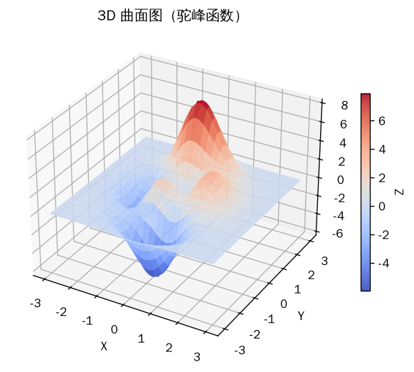
import numpy as np
import matplotlib.pyplot as plt
from matplotlib import cm
x = np.linspace(-3, 3, 60)
y = np.linspace(-3, 3, 60)
X, Y = np.meshgrid(x, y)
Z = (3*(1-X/3)**2 * np.exp(-X**2 - (Y+1)**2)
- 10*(X/5 - X**3 - Y**5) * np.exp(-X**2 - Y**2)
- 1/3 * np.exp(-(X+1)**2 - Y**2))
fig = plt.figure(figsize=(7, 5))
ax = fig.add_subplot(111, projection='3d')
surf = ax.plot_surface(X, Y, Z, cmap=cm.coolwarm,
linewidth=0, antialiased=True, alpha=0.9)
fig.colorbar(surf, ax=ax, shrink=0.6, label='Z')
ax.set_title('3D 曲面图（驼峰函数）')
ax.set_xlabel('X'); ax.set_ylabel('Y'); ax.set_zlabel('Z')
plt.show()堆叠面积图展示多个时间序列的累积变化。np.random.uniform 生成随机增量，cumsum() 计算累积和。用 plt.stackplot 绘制堆叠区域，适合展示各组成部分对总量的贡献随时间的变化。
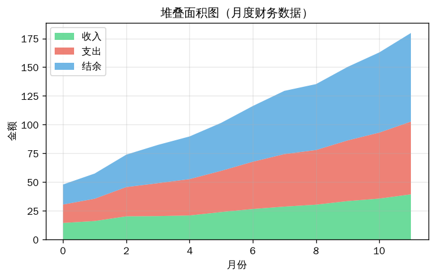
import numpy as np
import matplotlib.pyplot as plt
np.random.seed(6)
x = np.arange(12)
y1 = 10 + np.random.uniform(0, 5, 12).cumsum()
y2 = y1 + np.random.uniform(0, 3, 12).cumsum()
y3 = y2 + np.random.uniform(0, 2, 12).cumsum()
plt.figure(figsize=(7, 4))
plt.stackplot(x, y1, y2, y3,
labels=['收入', '支出', '结余'], alpha=0.7,
colors=['#2ecc71', '#e74c3c', '#3498db'])
plt.title('堆叠面积图（月度财务数据）')
plt.xlabel('月份')
plt.ylabel('金额')
plt.legend(loc='upper left')
plt.grid(alpha=0.3)
plt.show()子图组合将多种图表类型整合在同一个画布中。plt.subplots(2, 3) 创建 2×3 网格的轴对象数组，通过 axes.flat 遍历访问每个子图，分别绘制不同类型的图表。适合数据探索报告的面板展示。
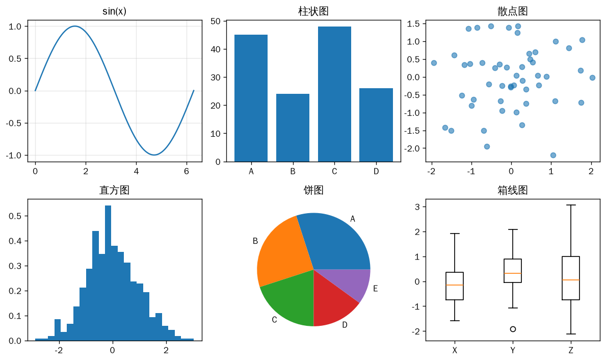
import numpy as np
import matplotlib.pyplot as plt
np.random.seed(5)
x = np.linspace(0, 2*np.pi, 200)
fig, axes = plt.subplots(2, 3, figsize=(10, 6))
ax = axes.flat
ax[0].plot(x, np.sin(x))
ax[0].set_title('sin(x)')
ax[0].grid(alpha=0.3)
ax[1].bar(['A','B','C','D'],
np.random.randint(10, 50, 4))
ax[1].set_title('柱状图')
ax[2].scatter(np.random.randn(50),
np.random.randn(50), alpha=0.6)
ax[2].set_title('散点图')
ax[3].hist(np.random.randn(500), bins=25, density=True)
ax[3].set_title('直方图')
ax[4].pie([30,25,20,15,10],
labels=['A','B','C','D','E'])
ax[4].set_title('饼图')
ax[5].boxplot([np.random.randn(40) for _ in range(3)],
tick_labels=['X','Y','Z'])
ax[5].set_title('箱线图')
plt.tight_layout()
plt.show()本文展示了 NumPy 与 Matplotlib 在数据可视化中的 11 种典型应用场景。NumPy 负责高效的数据生成与数值计算，Matplotlib 提供从基础到高级的绘图支持。核心要点：
np.linspace（等间距采样）、np.random.randn（正态分布）、np.meshgrid（网格生成）、np.polyfit（多项式拟合）